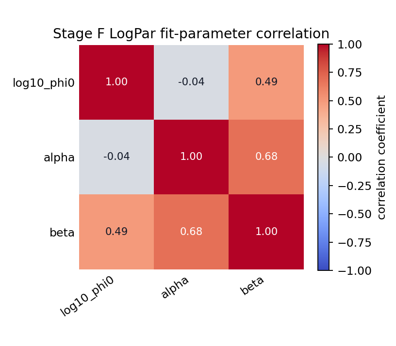
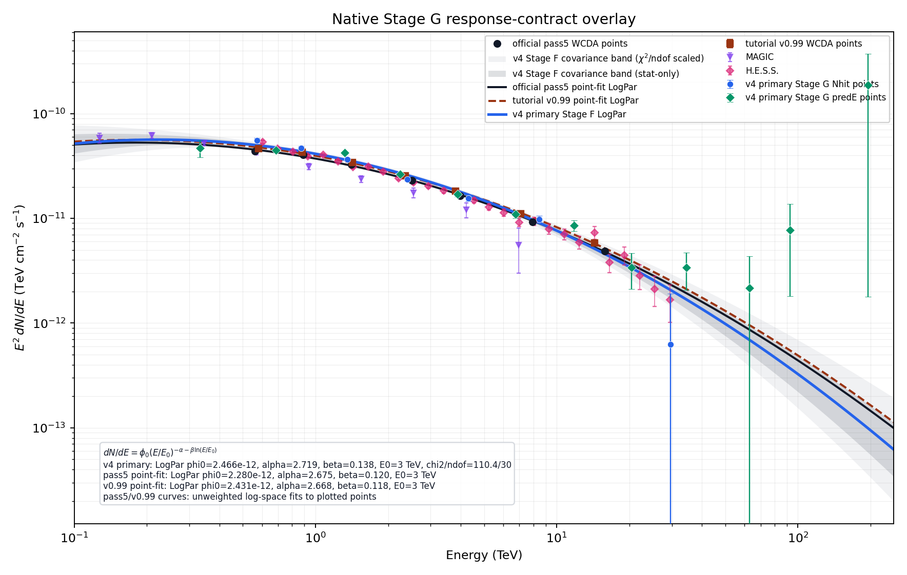

Executive Summary
v4_split56_ridge as the current stage baseline, not the final migration-binned v5 result. The baseline uses the aperture-conditioned response as the primary result: Stage A counts only MC events with mc_dangle <= r_opt, and Stage F/G use a Stage E signal clone with containment_r_opt=1. The current baseline also splits the former high-energy predE [5,6) interval into [5,5.5) and [5.5,6), and returns to a prefit MC ridge selector without manual drop4 removal.N_on 134,375; excess 16236.7
known-background Poisson aggregate; Li-Ma is not defined for direct expectation bkg.
phi0 2.46650e-12, alpha/gamma 2.719, beta 0.13826; chi2/ndof 110.4/30
Stage D active-fit warnings: 0
Baseline Configuration
The baseline contract is intentionally explicit: the on-source aperture is already part of Stage A response construction, so downstream Stage F/G use containment_r_opt=1.
| component | baseline setting |
|---|---|
| baseline id | v4_split56_ridge |
| response | ../output/stage_a_v4_split56_ridge/response_2d_v4_split56_ridge.npz |
| response numerator | MC events satisfying mc_dangle <= r_opt |
| downstream containment | containment_r_opt = 1 in Stage E/F/G |
| background | annulus-normalized quadratic 2D surface |
| predE grid | original fine predE grid with final [5,6) split into [5,5.5) and [5.5,6) |
| cell selector | cell_selector_v5_predbin_split56.csv; MC-ridge only, no manual drop4 filter |
| Stage F run | v4_split56_ridge_stage_f |
| Stage G run | v4_split56_ridge_stage_g |
Stage provenance
| Stage | current role | run / type | metadata |
|---|---|---|---|
| A | aperture-conditioned 2D response | primary_thrown_aperture_conditioned_response | apply/output/stage_a_v4_split56_ridge/response_2d_v4_split56_ridge_metadata.json |
| B | MC PSF for r_opt | v4_split56_ridge_stage_b_rayleigh | apply/output/stage_b_v4_split56_ridge/runs/v4_split56_ridge_stage_b_rayleigh/psf_v4_split56_ridge_metadata.json |
| C | observation event reduction | v4_split56_ridge_stage_c | apply/output/stage_c_v4_split56_ridge/runs/v4_split56_ridge_stage_c/obs_events_metadata.json |
| D | annulus-normalized 2D background | v4_split56_ridge_stage_d_annnorm | apply/output/stage_d_v4_split56_ridge/runs/v4_split56_ridge_stage_d_annnorm/background_v4_split56_ridge_metadata.json |
| E | on-region excess; containment forced to one for response contract | v4_split56_ridge_stage_e_containment1 | apply/output/stage_e_v4_split56_ridge/runs/v4_split56_ridge_stage_e_containment1/signal_v4_split56_ridge_metadata.json |
| F | global forward-folding fit | v4_split56_ridge_stage_f | apply/output/stage_f_v4_split56_ridge/runs/v4_split56_ridge_stage_f/fit_v4_split56_ridge_metadata.json |
| G | diagnostic SED points | v4_split56_ridge_stage_g | apply/output/stage_g_v4_split56_ridge/runs/v4_split56_ridge_stage_g/sed_points_v4_split56_ridge_metadata.json |
Fit Cell Definition And PSF
The baseline cell set is generated from MC occupancy only: central99 reconstructed-energy support, minimum MC statistics, a fixed ridge-peak-fraction threshold, and the predeclared high-energy split. No Crab excess, Stage F pull, or manual user-picked cell is used to add or remove fit cells.
Included cell ids: 1, 2, 3, 4, 15, 16, 17, 18, 28, 29, 30, 31, 32, 42, 43, 44, 45, 46, 56, 57, 58, 59, 70, 71, 72, 73, 74, 85, 86, 87, 88, 89, 90
Fit-cell selector table
| cell | Nhit | predE | MC count | ridge frac. | PSF | selection reason |
|---|---|---|---|---|---|---|
| 1 | [125,200) | [2,2.5) | 186,591 | 0.446 | native | central99 MC-occupancy-ridge prefit cell inside [2,6) |
| 2 | [125,200) | [2.5,3) | 418,034 | 1 | native | central99 MC-occupancy-ridge prefit cell inside [2,6) |
| 3 | [125,200) | [3,3.25) | 88,759 | 0.212 | native | central99 MC-occupancy-ridge prefit cell inside [2,6) |
| 4 | [125,200) | [3.25,3.5) | 42,094 | 0.101 | native | central99 MC-occupancy-ridge prefit cell inside [2,6) |
| 15 | [200,300) | [2.5,3) | 255,726 | 1 | native | central99 MC-occupancy-ridge prefit cell inside [2,6) |
| 16 | [200,300) | [3,3.25) | 122,642 | 0.48 | native | central99 MC-occupancy-ridge prefit cell inside [2,6) |
| 17 | [200,300) | [3.25,3.5) | 55,093 | 0.215 | native | central99 MC-occupancy-ridge prefit cell inside [2,6) |
| 18 | [200,300) | [3.5,3.75) | 26,172 | 0.102 | native | central99 MC-occupancy-ridge prefit cell inside [2,6) |
| 28 | [300,500) | [2.5,3) | 80,182 | 0.529 | native | central99 MC-occupancy-ridge prefit cell inside [2,6) |
| 29 | [300,500) | [3,3.25) | 151,506 | 1 | native | central99 MC-occupancy-ridge prefit cell inside [2,6) |
| 30 | [300,500) | [3.25,3.5) | 112,141 | 0.74 | native | central99 MC-occupancy-ridge prefit cell inside [2,6) |
| 31 | [300,500) | [3.5,3.75) | 46,983 | 0.31 | native | central99 MC-occupancy-ridge prefit cell inside [2,6) |
| 32 | [300,500) | [3.75,4.0) | 20,906 | 0.138 | native | central99 MC-occupancy-ridge prefit cell inside [2,6) |
| 42 | [500,800) | [3,3.25) | 27,769 | 0.31 | native | central99 MC-occupancy-ridge prefit cell inside [2,6) |
| 43 | [500,800) | [3.25,3.5) | 89,513 | 1 | native | central99 MC-occupancy-ridge prefit cell inside [2,6) |
| 44 | [500,800) | [3.5,3.75) | 68,604 | 0.766 | native | central99 MC-occupancy-ridge prefit cell inside [2,6) |
| 45 | [500,800) | [3.75,4.0) | 26,703 | 0.298 | native | central99 MC-occupancy-ridge prefit cell inside [2,6) |
| 46 | [500,800) | [4.0,4.25) | 10,601 | 0.118 | native | central99 MC-occupancy-ridge prefit cell inside [2,6) |
| 56 | [800,1100) | [3.25,3.5) | 15,783 | 0.481 | native | central99 MC-occupancy-ridge prefit cell inside [2,6) |
| 57 | [800,1100) | [3.5,3.75) | 32,787 | 1 | native | central99 MC-occupancy-ridge prefit cell inside [2,6) |
| 58 | [800,1100) | [3.75,4.0) | 22,615 | 0.69 | native | central99 MC-occupancy-ridge prefit cell inside [2,6) |
| 59 | [800,1100) | [4.0,4.25) | 9,020 | 0.275 | native | central99 MC-occupancy-ridge prefit cell inside [2,6) |
| 70 | [1100,2000) | [3.5,3.75) | 10,960 | 0.457 | native | central99 MC-occupancy-ridge prefit cell inside [2,6) |
| 71 | [1100,2000) | [3.75,4.0) | 23,726 | 0.989 | native | central99 MC-occupancy-ridge prefit cell inside [2,6) |
| 72 | [1100,2000) | [4.0,4.25) | 23,998 | 1 | native | central99 MC-occupancy-ridge prefit cell inside [2,6) |
| 73 | [1100,2000) | [4.25,4.5) | 13,380 | 0.558 | native | central99 MC-occupancy-ridge prefit cell inside [2,6) |
| 74 | [1100,2000) | [4.5,4.75) | 5,650 | 0.235 | native | central99 MC-occupancy-ridge prefit cell inside [2,6) |
| 85 | [2000,3000) | [4.0,4.25) | 1,175 | 0.183 | native | central99 MC-occupancy-ridge prefit cell inside [2,6) |
| 86 | [2000,3000) | [4.25,4.5) | 3,127 | 0.486 | native | central99 MC-occupancy-ridge prefit cell inside [2,6) |
| 87 | [2000,3000) | [4.5,4.75) | 5,515 | 0.857 | native | central99 MC-occupancy-ridge prefit cell inside [2,6) |
| 88 | [2000,3000) | [4.75,5.0) | 5,332 | 0.829 | native | central99 MC-occupancy-ridge prefit cell inside [2,6) |
| 89 | [2000,3000) | [5,5.5) | 6,434 | 1 | native | central99 MC-occupancy-ridge prefit cell inside [2,6) |
| 90 | [2000,3000) | [5.5,6) | 799 | 0.124 | native | central99 MC-occupancy-ridge prefit cell inside [2,6) |
Stage B / PSF diagnostics
These Stage B diagnostics are MC-side PSF provenance for the current v4_split56_ridge fit. The radial profile grid below keeps the nominal full candidate grid, but panels with a pale green background are the cells that actually enter the current v4 Stage F/G fit.
1, 2, 3, 4, 15, 16, 17, 18, 28, 29, 30, 31, 32, 42, 43, 44, 45, 46, 56, 57, 58, 59, 70, 71, 72, 73, 74, 85, 86, 87, 88, 89, 90.
Pale green panels are the current v4 fit cells. Non-highlighted panels remain visible as candidate-grid PSF context.

Candidate-grid Rayleigh-core PSF width sigma in degrees. Smaller sigma means a narrower reconstructed Crab response for that cell.

Candidate-grid aperture radius used for the on-region integration. In v3/v4 this is tied to the fitted PSF width, approximately r_opt = 1.58 * sigma.

Fraction of the cell PSF contained inside r_opt. Low containment or warnings indicate broad tails or fragile low-stat PSF behavior.

Effective MC statistics after Crab-declination theta reweighting, Neff = (sum w)^2 / sum(w^2). Low Neff means the PSF is dominated by a small number of weighted MC events.

MC theta support after the Stage B cuts; gray is the Crab-visible theta target used for reweighting. This remains useful as PSF-support provenance for the v4 selector.
Current v4 fit-cell PSF table
| cell | Nhit | predE | sigma deg | r_opt deg | containment | Neff | missing mass | PSF source | orig missing |
|---|---|---|---|---|---|---|---|---|---|
| 1 | [125,200) | [2,2.5) | 0.4947 | 0.7816 | 0.5589 | 10049 | 0 | direct Stage B PSF | n/a |
| 2 | [125,200) | [2.5,3) | 0.4564 | 0.7211 | 0.6565 | 69269 | 0 | direct Stage B PSF | n/a |
| 3 | [125,200) | [3,3.25) | 0.4986 | 0.7878 | 0.6549 | 34634 | 0 | direct Stage B PSF | n/a |
| 4 | [125,200) | [3.25,3.5) | 0.673 | 1.063 | 0.5926 | 22508 | 0 | direct Stage B PSF | n/a |
| 15 | [200,300) | [2.5,3) | 0.3461 | 0.5469 | 0.7029 | 21172 | 0 | direct Stage B PSF | n/a |
| 16 | [200,300) | [3,3.25) | 0.4612 | 0.7287 | 0.6854 | 16719 | 0 | direct Stage B PSF | n/a |
| 17 | [200,300) | [3.25,3.5) | 0.6538 | 1.033 | 0.6527 | 14887 | 0 | direct Stage B PSF | n/a |
| 18 | [200,300) | [3.5,3.75) | 0.8234 | 1.301 | 0.6388 | 11115 | 0 | direct Stage B PSF | n/a |
| 28 | [300,500) | [2.5,3) | 0.263 | 0.4156 | 0.7103 | 11408 | 0 | direct Stage B PSF | n/a |
| 29 | [300,500) | [3,3.25) | 0.41 | 0.6477 | 0.7223 | 10705 | 0 | direct Stage B PSF | n/a |
| 30 | [300,500) | [3.25,3.5) | 0.6266 | 0.9901 | 0.6642 | 8443.2 | 0 | direct Stage B PSF | n/a |
| 31 | [300,500) | [3.5,3.75) | 0.7936 | 1.254 | 0.6733 | 7809.3 | 0 | direct Stage B PSF | n/a |
| 32 | [300,500) | [3.75,4.0) | 0.9151 | 1.446 | 0.6464 | 6116.2 | 0 | direct Stage B PSF | n/a |
| 42 | [500,800) | [3,3.25) | 0.3374 | 0.5331 | 0.7525 | 4809.2 | 0 | direct Stage B PSF | n/a |
| 43 | [500,800) | [3.25,3.5) | 0.6165 | 0.9741 | 0.669 | 2826.2 | 0 | direct Stage B PSF | n/a |
| 44 | [500,800) | [3.5,3.75) | 0.7489 | 1.183 | 0.6911 | 2576.9 | 0 | direct Stage B PSF | n/a |
| 45 | [500,800) | [3.75,4.0) | 0.8857 | 1.399 | 0.6937 | 2671.3 | 0 | direct Stage B PSF | n/a |
| 46 | [500,800) | [4.0,4.25) | 0.9804 | 1.549 | 0.6524 | 2483 | 0 | direct Stage B PSF | n/a |
| 56 | [800,1100) | [3.25,3.5) | 0.6242 | 0.9862 | 0.6259 | 346.3 | 0 | direct Stage B PSF | n/a |
| 57 | [800,1100) | [3.5,3.75) | 0.7813 | 1.234 | 0.7005 | 518.1 | 0 | direct Stage B PSF | n/a |
| 58 | [800,1100) | [3.75,4.0) | 0.9308 | 1.471 | 0.6651 | 508.58 | 0 | direct Stage B PSF | n/a |
| 59 | [800,1100) | [4.0,4.25) | 1.109 | 1.753 | 0.5799 | 1700.6 | 0 | direct Stage B PSF | n/a |
| 70 | [1100,2000) | [3.5,3.75) | 1 | 1.58 | 0.713 | 0 | 1 | direct Stage B PSF | n/a |
| 71 | [1100,2000) | [3.75,4.0) | 1 | 1.58 | 0.713 | 0 | 1 | direct Stage B PSF | n/a |
| 72 | [1100,2000) | [4.0,4.25) | 1 | 1.58 | 0.713 | 0 | 1 | direct Stage B PSF | n/a |
| 73 | [1100,2000) | [4.25,4.5) | 1 | 1.58 | 0.713 | 0 | 1 | direct Stage B PSF | n/a |
| 74 | [1100,2000) | [4.5,4.75) | 1 | 1.58 | 0.713 | 0 | 1 | direct Stage B PSF | n/a |
| 85 | [2000,3000) | [4.0,4.25) | n/a | n/a | n/a | n/a | n/a | direct Stage B PSF | n/a |
| 86 | [2000,3000) | [4.25,4.5) | n/a | n/a | n/a | n/a | n/a | direct Stage B PSF | n/a |
| 87 | [2000,3000) | [4.5,4.75) | n/a | n/a | n/a | n/a | n/a | direct Stage B PSF | n/a |
| 88 | [2000,3000) | [4.75,5.0) | n/a | n/a | n/a | n/a | n/a | direct Stage B PSF | n/a |
| 89 | [2000,3000) | [5,5.5) | n/a | n/a | n/a | n/a | n/a | direct Stage B PSF | n/a |
| 90 | [2000,3000) | [5.5,6) | n/a | n/a | n/a | n/a | n/a | direct Stage B PSF | n/a |
Stage D/E Background And Excess
The current report is rebuilt around the annulus-normalized quadratic 2D background. The quadratic fit keeps the local shape from the training ring, then forces the total fitted background in that ring to match the observed annulus counts for each cell.
| item | definition |
|---|---|
| ROI | rho < 6 deg around Crab tangent-plane center |
| training ring | inner radius is max(1.5 deg, source mask); width 2 deg; capped by 3 deg |
| raw surface | B_raw(x,y) = c0 + c1*x + c2*y + c3*x^2 + c4*x*y + c5*y^2 |
| positivity | B_pos(x,y) = max(B_raw(x,y), 0) |
| annulus normalization | scale_b = sum_annulus(counts_b) / sum_annulus(B_pos,b) |
| final bkg | B_final,b(x,y) = scale_b * B_pos,b(x,y); B_on,b is the integral over the PSF on aperture |

Observed counts in the 6 deg Crab ROI for the candidate grid.

Grey/colored ring pixels show where the 2D surface is trained; the central Crab/source mask is excluded from training.

The final annulus-normalized 2D background map B_final(x,y) for each cell.

Training-ring residuals after the surface fit.

The fitted background extrapolated into the Crab core/on region used for B_on.

Counts map after subtracting the annulus-normalized fitted 2D background.

Per-cell multiplicative scale forcing the annulus-integrated fitted surface to match annulus observed counts.

Unnormalized Dec-offset profiles summed over the active fit cells.
Stage E current excess
| N_on | B_on | excess | sqrt(N_on+B_on) | formal sigma | note |
|---|---|---|---|---|---|
| 134,375 | 1.181383e+05 | 16236.7 | 502.51 | 46.215 | direct expectation background; no Li-Ma alpha/N_off |

Per-cell N_on and B_on entering the current v4 baseline fit.

Per-cell N_on - B_on using the annulus-normalized background.

Per-cell known-background Poisson diagnostic significance.

Ratio view to expose local under/over-background behavior.
Stage F: Current Forward-Folding Fit
The preferred spectrum is selected by the Stage F metadata. This is the primary v4 fit using the aperture-conditioned Stage A response and downstream containment_r_opt=1.
| fit | model | phi0 | gamma/alpha | beta | chi2 | ndof | chi2/ndof | |
|---|---|---|---|---|---|---|---|---|
| pl_conservative | pl | 2.19044e-12 | 2.6147 | n/a | 158.95 | 31 | 5.128 | |
| logpar_conservative | logpar | 2.46650e-12 | 2.719 | 0.13826 | 110.43 | 30 | 3.681 | preferred |
| pl_sqrt_n | pl | 2.20663e-12 | 2.6042 | n/a | 270.88 | 31 | 8.738 | |
| logpar_sqrt_n | logpar | 2.50425e-12 | 2.7366 | 0.15537 | 181.6 | 30 | 6.053 |
Fit covariance and SED band
The grey SED band is propagated from the preferred Stage F Minuit covariance in (log10_phi0, alpha, beta) space. For each energy, the report propagates sigma_lnY^2 = g^T C g, where Y=E^2 dN/dE and g=(ln10, -ln(E/E0), -ln(E/E0)^2).
True, accurate=True, has_accurate_covar=True; chi2/ndof=110.43 / 30. The darker band is the raw covariance band; the wider pale band scales the covariance by chi2/ndof as a conservative visual diagnostic because the fine-cell fit has excess scatter.| parameter | value | 1 sigma error | meaning |
|---|---|---|---|
| log10_phi0 | -11.6079 | 0.011957 | fit-space normalization |
| phi0 | 2.46650e-12 | 6.79080e-14 | physical normalization at E0=3 TeV |
| alpha | 2.719 | 0.033875 | LogPar slope |
| beta | 0.13826 | 0.02516 | LogPar curvature |

Correlation matrix from the Minuit covariance in fit space: log10_phi0, alpha, beta. This is the source of the grey SED uncertainty band in the SED overlay plots.

Fit-cell excess compared with the preferred spectral model expectation under the new response contract.

Per-cell residual pull under the current preferred LogPar fit.

Zenith-angle exposure diagnostic used by the forward-folding response.

Power-law residual grid kept as a model-comparison diagnostic.
Stage G: Current SED Points
Stage G fixes the Stage F preferred spectral shape and refits only one normalization per diagnostic energy grouping. These are the primary v4 SED points from the aperture-conditioned response branch. They are native diagnostic points from v4_split56_ridge_stage_g, not v5 migration-binned points.
| group | bin | cells | Eeff TeV | E2 dN/dE | err | chi2/ndof |
|---|---|---|---|---|---|---|
| nhit | [125,200) | 1,2,3,4 | 0.5728 | 5.52738e-11 | 3.7204e-12 | 2.29 |
| nhit | [200,300) | 15,16,17,18 | 0.8732 | 4.70629e-11 | 2.0586e-12 | 11 |
| nhit | [300,500) | 28,29,30,31,32 | 1.355 | 3.65244e-11 | 1.1342e-12 | 4.16 |
| nhit | [500,800) | 42,43,44,45,46 | 2.406 | 2.36754e-11 | 9.6112e-13 | 1.91 |
| nhit | [800,1100) | 56,57,58,59 | 4.309 | 1.56240e-11 | 1.1038e-12 | 5.37 |
| nhit | [1100,2000) | 70,71,72,73,74 | 8.453 | 9.81255e-12 | 7.8917e-13 | 2.32 |
| nhit | [2000,3000) | 85,86,87,88,89,90 | 29.62 | 6.24785e-13 | 1.2862e-12 | 1.54 |
| predE | [2,2.5) | 1 | 0.3328 | 4.68885e-11 | 8.5438e-12 | n/a |
| predE | [2.5,3) | 2,15,28 | 0.6868 | 4.47580e-11 | 1.6915e-12 | 4.34 |
| predE | [3,3.25) | 3,16,29,42 | 1.323 | 4.21944e-11 | 1.5121e-12 | 7.91 |
| predE | [3.25,3.5) | 4,17,30,43,56 | 2.24 | 2.62548e-11 | 1.0265e-12 | 2.72 |
| predE | [3.5,3.75) | 18,31,44,57,70 | 3.886 | 1.69362e-11 | 8.9147e-13 | 2.7 |
| predE | [3.75,4.0) | 32,45,58,71 | 6.747 | 1.09623e-11 | 9.0601e-13 | 0.584 |
| predE | [4.0,4.25) | 46,59,72,85 | 11.8 | 8.53880e-12 | 1.0113e-12 | 4.81 |
| predE | [4.25,4.5) | 73,86 | 20.42 | 3.40220e-12 | 1.2783e-12 | 3.36 |
| predE | [4.5,4.75) | 74,87 | 34.57 | 3.38182e-12 | 1.3042e-12 | 6.71 |
| predE | [4.75,5.0) | 88 | 63.04 | 2.17366e-12 | 2.1792e-12 | n/a |
| predE | [5,5.5) | 89 | 92.87 | 7.73813e-12 | 5.9402e-12 | n/a |
| predE | [5.5,6) | 90 | 194.8 | 1.86781e-10 | 1.8499e-10 | n/a |

Overlay version of the native Stage G diagnostic: v4 primary Stage G points and Stage F fit, official pass5 and tutorial v0.99 point-fit curves, plus H.E.S.S. and MAGIC external measurements.

Diagnostic ratios to the frozen Stage F model / reference curves.

Which fit cells enter each diagnostic SED point.
Official Reference Comparison
This section compares the v4 baseline against official/tutorial references. The first figure is the science-facing SED overlay; historical drop4/active30 controls are intentionally left out of the baseline body so this report stays focused on the current configuration.

Blue/green markers are the primary aperture-response v4 Stage G points. Grey open markers are the previous v3 psfborrow points. Black/brown markers are official pass5/tutorial WCDA references.
V4 primary Stage G points and Stage F fit, official pass5 and tutorial v0.99 point-fit curves, plus H.E.S.S. and MAGIC external measurements.
Baseline Limitations
| limitation | current evidence | practical implication |
|---|---|---|
| low-energy residual | Official pass5 forward-fold remains high in low/mid Nhit groups under the aperture-conditioned response. | Low-energy flux should be treated as baseline-but-not-final until migration-binned final SED bins are adopted. |
| large fine-cell chi2 | Stage F LogPar chi2/ndof is still high for fine cells. | The fit is useful for baseline tracking, but fine predE cells should not be over-interpreted as independent final SED bins. |
| response / energy migration | Coarse row-level or migration-informed grouping relieves residuals more than ad hoc cell removal. | Use migration-informed final SED binning as the next physics-facing SED product. |
| limited exposure | Current observation span is much shorter than official multi-year analyses. | High-energy points remain statistics-limited and should be revisited with more data. |
Appendix: Empirical PSF Cross-Check
This diagnostic fits an empirical/effective PSF directly from observed Crab excess maps. It keeps the latest annulus-normalized Stage D background fixed, so it is a PSF/containment check rather than a new background fit or a replacement for the MC response.
33; single-cell empirical PSF fits passing the preset statistics gate: 13. Reliable-cell median sigma_obs/MC is 0.9635; median r68_obs/MC is 0.8524. Profile integration closure max absolute error is 0. Interpretation: if low-energy high-excess cells showed a coherent sigma_obs/MC or r68_obs/MC shift, spatial containment would be implicated; if not, continue prioritizing response normalization, energy migration, and cell-selection normalization.
Orange curves are peak-normalized observed excess radial profiles from counts minus fixed Stage D background. Blue curves are the Stage B MC PSF profiles. Black curves are simple Rayleigh/Gaussian fits to the observed excess core. Red titles mark cells failing the statistics gate.

Raw radial sums for counts, fitted background, and counts-background. This checks whether the empirical PSF fit is being driven by source excess or by residual background shape.

Cell-grid ratio of observed empirical Rayleigh width to Stage B MC sigma. Starred cells are plotted but not used for strong single-cell conclusions because they fail the statistics gate.

Cell-grid ratio of observed empirical r68 to Stage B MC r68. This is the containment-width comparison most directly related to aperture consistency.

Fit-cell profiles summed by Nhit bin. This grouped fallback is the safer view when individual high-Nhit cells have too few observed counts for stable PSF fitting.
Single-cell empirical PSF reliability
| cell | Nhit | predE | N_on | B_on | excess | sig | gate | sigma/MC | r68/MC | profile RMS |
|---|---|---|---|---|---|---|---|---|---|---|
| 1 | [125,200) | [2,2.5) | 21284 | 20166.7 | 1117.3 | 5.488 | reliable | 0.7445 | 0.4318 | 0.3424 |
| 2 | [125,200) | [2.5,3) | 40293 | 36636 | 3657 | 13.18 | reliable | 0.8572 | 0.7735 | 0.1682 |
| 3 | [125,200) | [3,3.25) | 9462 | 8804.99 | 657.01 | 4.861 | significance_lt_5 | 0.7255 | 0.6462 | 0.3445 |
| 4 | [125,200) | [3.25,3.5) | 7577 | 7565.3 | 11.703 | 0.09511 | excess_lt_100;significance_lt_5 | 0.4936 | 0.3411 | 0.742 |
| 15 | [200,300) | [2.5,3) | 10510 | 8162.74 | 2347.3 | 17.18 | reliable | 0.9751 | 0.8703 | 0.1967 |
| 16 | [200,300) | [3,3.25) | 4457 | 3144.75 | 1312.2 | 15.05 | reliable | 0.9598 | 0.9602 | 0.1548 |
| 17 | [200,300) | [3.25,3.5) | 2918 | 2503.61 | 414.39 | 5.628 | reliable | 0.6349 | 0.6155 | 0.3302 |
| 18 | [200,300) | [3.5,3.75) | 2441 | 2335.54 | 105.46 | 1.526 | significance_lt_5 | 0.2672 | 0.2366 | 0.4956 |
| 28 | [300,500) | [2.5,3) | 1834 | 1008.18 | 825.82 | 15.49 | reliable | 1.012 | 0.7769 | 0.1655 |
| 29 | [300,500) | [3,3.25) | 3067 | 1545.42 | 1521.6 | 22.4 | reliable | 1.129 | 0.9568 | 0.1484 |
| 30 | [300,500) | [3.25,3.5) | 1706 | 905.503 | 800.5 | 15.66 | reliable | 0.9635 | 0.9694 | 0.1173 |
| 31 | [300,500) | [3.5,3.75) | 1088 | 755.954 | 332.05 | 7.733 | reliable | 0.7703 | 0.8524 | 0.2655 |
| 32 | [300,500) | [3.75,4.0) | 891 | 785.723 | 105.28 | 2.571 | significance_lt_5 | 0.8443 | 0.7763 | 0.4444 |
| 42 | [500,800) | [3,3.25) | 4177 | 3553.79 | 623.21 | 7.088 | reliable | 0.2141 | 0.2141 | n/a |
| 43 | [500,800) | [3.25,3.5) | 1155 | 396.879 | 758.12 | 19.24 | reliable | 1.055 | 0.8378 | 0.08559 |
| 44 | [500,800) | [3.5,3.75) | 559 | 195.551 | 363.45 | 13.23 | reliable | 1.072 | 1.064 | 0.1488 |
| 45 | [500,800) | [3.75,4.0) | 238 | 158.513 | 79.487 | 3.992 | excess_lt_100;significance_lt_5 | 0.5955 | 0.7431 | 0.4545 |
| 46 | [500,800) | [4.0,4.25) | 175 | 144.938 | 30.062 | 1.681 | N_on_lt_200;excess_lt_100;significance_lt_5 | n/a | n/a | 0.453 |
| 56 | [800,1100) | [3.25,3.5) | 1316 | 1109.02 | 206.98 | 4.203 | significance_lt_5 | 0.1878 | 0.1878 | n/a |
| 57 | [800,1100) | [3.5,3.75) | 280 | 72.5481 | 207.45 | 11.05 | reliable | 1.033 | 0.994 | 0.1152 |
| 58 | [800,1100) | [3.75,4.0) | 152 | 55.0288 | 96.971 | 6.739 | N_on_lt_200;excess_lt_100 | n/a | n/a | 0.1707 |
| 59 | [800,1100) | [4.0,4.25) | 105 | 38.0638 | 66.936 | 5.596 | N_on_lt_200;excess_lt_100 | n/a | n/a | 0.3221 |
| 70 | [1100,2000) | [3.5,3.75) | 514 | 406.893 | 107.11 | 3.529 | significance_lt_5 | 0.1681 | 0.1681 | n/a |
| 71 | [1100,2000) | [3.75,4.0) | 131 | 20.7068 | 110.29 | 8.955 | N_on_lt_200 | n/a | n/a | 0.2058 |
| 72 | [1100,2000) | [4.0,4.25) | 93 | 17.8374 | 75.163 | 7.139 | N_on_lt_200;excess_lt_100 | n/a | n/a | 0.2321 |
| 73 | [1100,2000) | [4.25,4.5) | 44 | 20.0113 | 23.989 | 2.998 | N_on_lt_200;excess_lt_100;significance_lt_5 | n/a | n/a | 0.4309 |
| 74 | [1100,2000) | [4.5,4.75) | 46 | 18.9287 | 27.071 | 3.36 | N_on_lt_200;excess_lt_100;significance_lt_5 | n/a | n/a | 0.3386 |
| 85 | [2000,3000) | [4.0,4.25) | 8 | 11.4595 | -3.4595 | -0.7842 | N_on_lt_200;excess_lt_100;significance_lt_5 | n/a | n/a | n/a |
| 86 | [2000,3000) | [4.25,4.5) | 31 | 41.2441 | -10.244 | -1.205 | N_on_lt_200;excess_lt_100;significance_lt_5 | n/a | n/a | n/a |
| 87 | [2000,3000) | [4.5,4.75) | 6 | 1.88901 | 4.111 | 1.464 | N_on_lt_200;excess_lt_100;significance_lt_5 | n/a | n/a | 0.33 |
| 88 | [2000,3000) | [4.75,5.0) | 11 | 6.79258 | 4.2074 | 0.9975 | N_on_lt_200;excess_lt_100;significance_lt_5 | n/a | n/a | 0.2659 |
| 89 | [2000,3000) | [5,5.5) | 19 | 11.7735 | 7.2265 | 1.303 | N_on_lt_200;excess_lt_100;significance_lt_5 | n/a | n/a | 0.3594 |
| 90 | [2000,3000) | [5.5,6) | 47 | 37.7074 | 9.2926 | 1.01 | N_on_lt_200;excess_lt_100;significance_lt_5 | n/a | n/a | n/a |
Nhit-group fallback fits
| Nhit | cells | cell ids | N_on | B_on | excess | sig | gate | sigma_obs | r68_obs |
|---|---|---|---|---|---|---|---|---|---|
| [125,200) | 4 | 1,2,3,4 | 78616 | 73173 | 5443 | 13.97 | reliable | 0.3814 | 0.5758 |
| [200,300) | 4 | 15,16,17,18 | 20326 | 16146.6 | 4179.4 | 21.88 | reliable | 0.3322 | 0.5015 |
| [300,500) | 5 | 28,29,30,31,32 | 8586 | 5000.77 | 3585.2 | 30.76 | reliable | 0.2764 | 0.4173 |
| [500,800) | 5 | 42,43,44,45,46 | 6304 | 4449.67 | 1854.3 | 17.88 | reliable | 0.2108 | 0.3182 |
| [800,1100) | 4 | 56,57,58,59 | 1853 | 1274.66 | 578.34 | 10.34 | reliable | 0.1845 | 0.2786 |
| [1100,2000) | 5 | 70,71,72,73,74 | 828 | 484.378 | 343.62 | 9.485 | reliable | 0.1484 | 0.2241 |
| [2000,3000) | 6 | 85,86,87,88,89,90 | 122 | 110.866 | 11.134 | 0.7296 | N_on_lt_200;excess_lt_100;significance_lt_5 | 0.1025 | 0.1547 |
Low-stat and PSF-risk notes
Cells failing the single-cell gate are kept in the plots but should not drive a PSF conclusion by themselves. Historical PSF-risk cells in the current v4 selector: none in current selector.
Because this is an observed effective PSF, it contains the true Crab spectrum, energy migration, zenith distribution, cell selection, and residual background-model effects. It should not be used to replace MC effective area or energy dispersion directly.